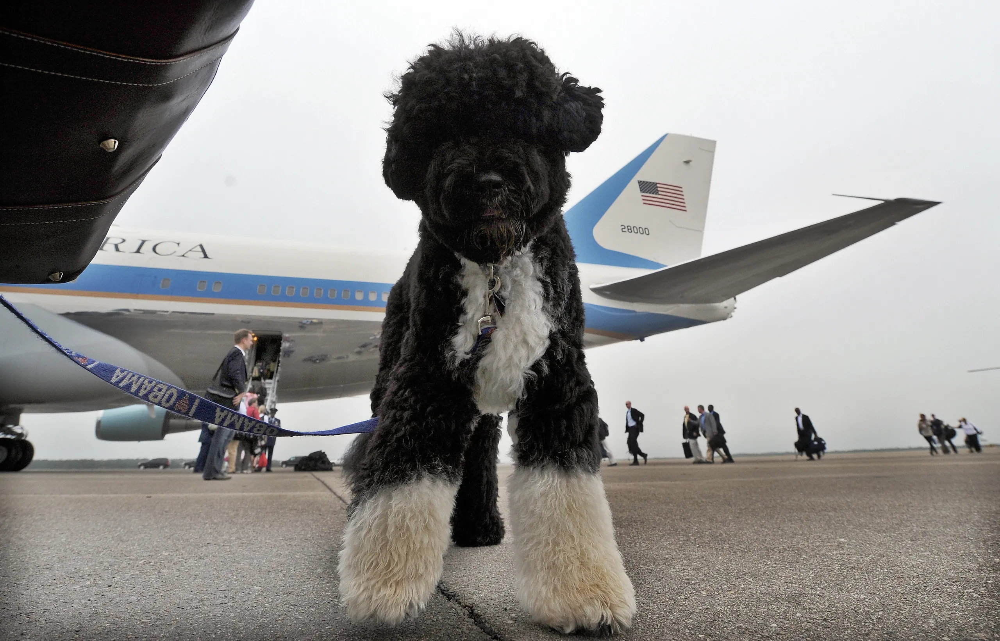
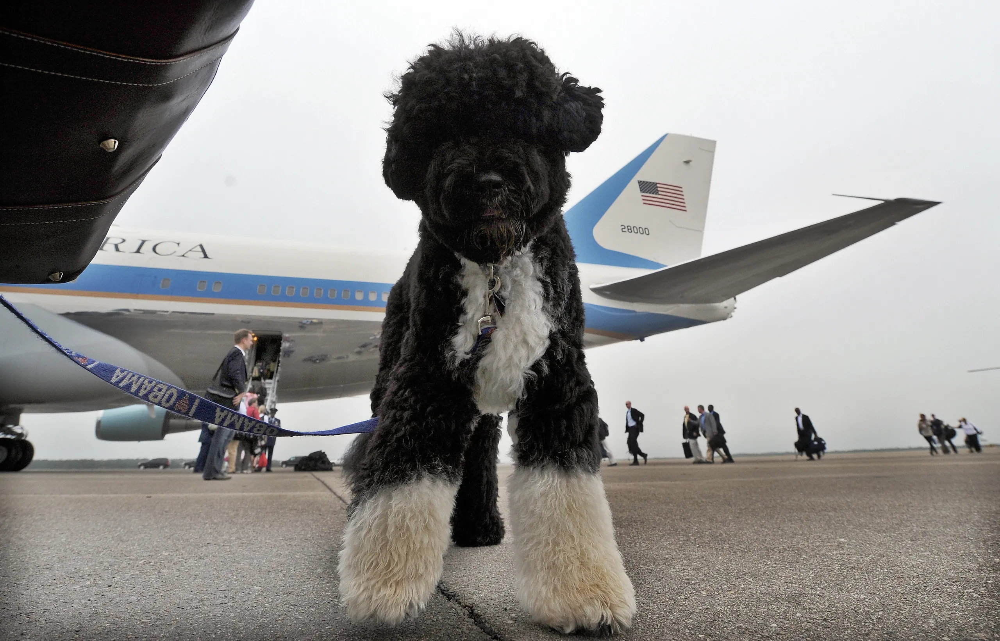

Zack

Zack is an African grey parrot, aged around three years old. Zack loves flying and being outside of the cage at all times. He’s very nice but bites so much.
Zack’s favorite foods are unsalted sunflower seeds and mangos. He loves being able to sit on people’s shoulders and talking to them. Zack knows over 500 words and learns more every day.
Photo Gallery


Likes
- Sunflower seeds
- Flying
- Going on Walks
Riley

Riley is a 2yr old goldendoodle. He is very active and loves attention. Riley can be pretty mischievous; as such, his favorite activity is begging for (or stealing) food, however getting cuddled on a cool floor comes as a close second. In addition, Riley loves to walk in his local park or hang out with his best friend Cosmo.
Riley would NOT survive in the wild. He is very stubborn, jealous, and pampered. He’s currently in his “terrible twos,” and must get everything his way. That said, Riley is loved by his family as a perfect, funny, and loyal dog.
Photo Gallery


Likes
- Sneaking onto the couch
- Being grumpy after naps
- Peering onto kitchen countertops
Milo

Milo, a bashful yet warm-hearted dog, holds a deep appreciation for social interactions, whether they involve humans or fellow pets. Having spent his entire life with the same loving family, Milo's consistent displays of loyalty reflect his strong sense of familiarity and connection. He's known for his charming quirks, such as his penchant for taking a few steps backward instead of a simple turn when changing direction.
Despite his shyness, Milo's keen senses come to the forefront. At the sound of a passing car, his bark, though more bark than bite, resonates beyond the walls of the house. Interestingly, Milo has never quite grasped the concept of navigating stairs, yet he remains remarkably perceptive about his surroundings. It's this unique blend of traits that makes Milo an endearing presence, leaving a lasting impression on those fortunate enough to share in his companionship.
Photo Gallery


Likes
- Bacon
- Socks
- Attention
Sofie

Sofie is a 15-year-old Beagle mix. Her favorite spot in the house is the living room couch. She loves to go outside, sometimes too much, leaving us to open the door for her constantly. Sofie loves freshly cut grass, she rolls around in it for hours after it gets cut.
Sofie is very old, she joined our family when I was still in a car seat. Sofie loves the weekends because she gets her favorite treat, a fried egg. Sofie loves long walks around the lake or on the trail, where she can be let free to run to he hearts content.
Photo Gallery


Likes
- Fried Eggs
- Peanut Butter
- Bacon Strips
Mocha

Mocha is a very energetic little dog. His favorite activities are tug-of-war with toys, playing fetch with his orange ball, and laying on his dad's lap. He has so much energy that in the evenings he tends to 'get the zoomies' in which he sprints in circles around the house without any stimulation.
When Mocha is done playing, he loves to lay down in an especially silly way. He lays on his belly with his rear paws pointed straight backwards as shown in the following photos. It's his favorite way to recharge after a long day of play.
Media Gallery


Likes
- Jumping on and off the couch
- Running in circles
- Belly rubs
Bo

Bo is a Portuguese Water Dog with black and white fur. His paws are white too, so they always get dirty when outside. He is 12 years old, but he still likes to run around outside a lot.
He has an abundance of toys but only likes to play with a couple. He enjoys going on walks and especially on trails in the woods. He has a few dog friends that he likes to go on playdates with as well.
Photo Gallery

 


Likes
- Walks
- The Sun
- Treats
Bacon Q Dog

Bacon Q. Dog is a 9yr old labradoodle. He prefers to spend his days lounging among the three different beds/couches that his family has gifted him. He enjoys a walk or two around the neighborhood, as long as he can pretend that he doesn't see any of the other animals to avoid the embarrassment of not wanting to admit he has no wolf-like skills in chasing them.
At night just as the rest of the family is ready to relax, Bacon suddenly wants to release all of his energy. He will place his toys on a mini couch and frantically drag the couch around, giving his toys "a ride." There is also a lot of rolling. Lots and lots of rolling.
Photo Gallery


Likes
- Belly rubs
- Playing tug-of-war
- Sneaking onto the couch